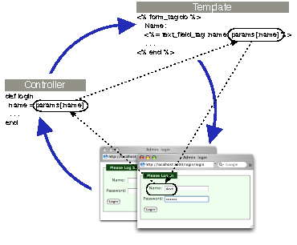
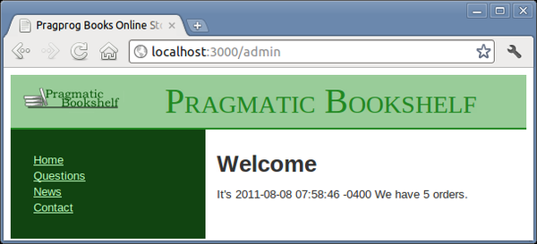

What does it mean to add login support for administrators of our store?
We need to provide a form that allows them to enter their username and password.
Once they are logged in, we need to record that fact somehow for the rest of their session (or until they log out).
We need to restrict access to the administrative parts of the application, allowing only people who are logged in to administer the store.
We’ll need a session controller to support logging in and out, and we’ll need a controller to welcome administrators.
depot> rails generate controller Sessions new create destroy |
|
depot> rails generate controller Admin index |
The SessionsController#create action will need to record something in session to say that an administrator is logged in. Let’s have it store the id of their User object using the key :user_id. The login code looks like this:
| rails31/depot_r/app/controllers/sessions_controller.rb | |
def create |
|
| * | user = User.find_by_name(params[:name]) |
| * | if user and user.authenticate(params[:password]) |
| * | session[:user_id] = user.id |
| * | redirect_to admin_url |
| * | else |
| * | redirect_to login_url, alert: "Invalid user/password combination" |
| * | end |
end |
|
We are also doing something new here: using a form that isn’t directly associated with a model object. To see how that works, let’s look at the template for the sessions#new action:
| rails31/depot_r/app/views/sessions/new.html.erb | |
<div class="depot_form" > |
|
<% if flash[:alert] %> |
|
<p id="notice" ><%= flash[:alert] %></p> |
|
<% end %> |
|
<%= form_tag do %> |
|
<fieldset> |
|
<legend>Please Log In</legend> |
|
<div> |
|
<label for="name" >Name:</label> |
|
<%= text_field_tag :name, params[:name] %> |
|
</div> |
|
<div> |
|
<label for="password" >Password:</label> |
|
<%= password_field_tag :password, params[:password] %> |
|
</div> |
|
<div> |
|
<%= submit_tag "Login" %> |
|
</div> |
|
</fieldset> |
|
<% end %> |
|
</div> |
|
This form is different from ones we saw earlier. Rather than using form_for, it uses form_tag, which simply builds a regular HTML <form>. Inside that form, it uses text_field_tag and password_field_tag, two helpers that create HTML <input> tags. Each helper takes two parameters. The first is the name to give to the field, and the second is the value with which to populate the field. This style of form allows us to associate values in the params structure directly with form fields—no model object is required. In our case, we chose to use the params object directly in the form. An alternative would be to have the controller set instance variables.
See Figure 28, Parameters flow between controllers, templates, and browsers. Note how the value of the form field is communicated between the controller and the view using the params hash: the view gets the value to display in the field from params[:name], and when the user submits the form, the new field value is made available to the controller the same way.
|  |
|
Figure 28. Parameters flow between controllers, templates, and browsers |
If the user successfully logs in, we store the id of the user record in the session data. We’ll use the presence of that value in the session as a flag to indicate that an admin user is logged in.
As you might expect, the controller actions for logging out are considerably simpler:
| rails31/depot_r/app/controllers/sessions_controller.rb | |
def destroy |
|
| * | session[:user_id] = nil |
| * | redirect_to store_url, notice: "Logged out" |
end |
|
Finally, it’s about time to add the index page, the first screen that administrators see when they log in. Let’s make it useful—we’ll have it display the total number of orders in our store. Create the template in the file index.html.erb in the directory app/views/admin. (This template uses the pluralize helper, which in this case generates the string order or orders depending on the cardinality of its first parameter.)
| rails31/depot_r/app/views/admin/index.html.erb | |
<h1>Welcome</h1> |
|
It's <%= Time.now %> |
|
We have <%= pluralize(@total_orders, "order") %>. |
|
The index action sets up the count:
| rails31/depot_r/app/controllers/admin_controller.rb | |
class AdminController < ApplicationController |
|
def index |
|
| * | @total_orders = Order.count |
end |
|
end |
|
We have one more task to do before we can use this. Whereas previously we relied on the scaffolding generator to create our model and routes for us, this time we simply generated a controller because there is no database-backed model for this controller. Unfortunately, without the scaffolding conventions to guide it, Rails has no way of knowing which actions are to respond to GET requests, which are to respond to POST requests, and so on, for this controller. We need to provide this information by editing our config/routes.rb file:
| rails31/depot_r/config/routes.rb | |
Depot::Application.routes.draw do |
|
| * | get 'admin' => 'admin#index' |
| * | controller :sessions do |
| * | get 'login' => :new |
| * | post 'login' => :create |
| * | delete 'logout' => :destroy |
| * | end |
resources :users |
|
resources :orders |
|
resources :line_items |
|
resources :carts |
|
get "store/index" |
|
resources :products do |
|
get :who_bought, on: :member |
|
end |
|
# ... |
|
# You can have the root of your site routed with "root" |
|
# just remember to delete public/index.html. |
|
# root :to => 'welcome#index' |
|
root to: 'store#index', as: 'store' |
|
# ... |
|
end |
|
We’ve touched this before, when we added a root statement in Section 8.1, Iteration C1: Creating the Catalog Listing. What the generate command will add to this file are fairly generic get statements for each of the actions specified. You can (and should) delete the routes provided for sessions/new, sessions/create, and sessions/destroy.
In the case of admin, we will shorten the URL that the user has to enter (by removing the /index part) and map it to the full action. In the case of session actions, we will completely change the URL (replacing things like session/create with simply login) as well as tailoring the HTTP action that we will match. Note that login is mapped to both the new and create actions, the difference being whether the request was an HTTP GET or HTTP POST.
We also make use of a shortcut: wrapping the session route declarations in a block and passing it to a controller class method. This saves us a bit of typing as well as making the routes easier to read. We will describe all that you can do in this file in Section 20.1, Dispatching Requests to Controllers.
With these routes in place, we can experience the joy of logging in as an administrator. See Figure 29, Administrative interface.
|  |
|
Figure 29. Administrative interface |
We need to replace the functional tests in the session controller to match what we just implemented:
| rails31/depot_r/test/functional/sessions_controller_test.rb | |
require 'test_helper' |
|
class SessionsControllerTest < ActionController::TestCase |
|
test "should get new" do |
|
get :new |
|
assert_response :success |
|
end |
|
| * | test "should login" do |
| * | dave = users(:one) |
| * | post :create, name: dave.name, password: 'secret' |
| * | assert_redirected_to admin_url |
| * | assert_equal dave.id, session[:user_id] |
| * | end |
| * | test "should fail login" do |
| * | dave = users(:one) |
| * | post :create, name: dave.name, password: 'wrong' |
| * | assert_redirected_to login_url |
| * | end |
| * | test "should logout" do |
| * | delete :destroy |
| * | assert_redirected_to store_url |
| * | end |
end |
|
And we need to update the test fixtures to match:
| rails31/depot_r/test/fixtures/users.yml | |
# Read about fixtures at http://api.rubyonrails.org/classes/Fixtures.html |
|
one: |
|
name: dave |
|
password_digest: <%= BCrypt::Password.create('secret') %> |
|
two: |
|
name: MyString |
|
password_digest: MyString |
|
Note the use of dynamically computed values in the fixture, specifically for the value of hashed_password. To make things match up, we use the same function that Rails itself[31] uses to compute the password.
We show our customer where we are, but she points out that we still haven’t controlled access to the administrative pages (which was, after all, the point of this exercise).